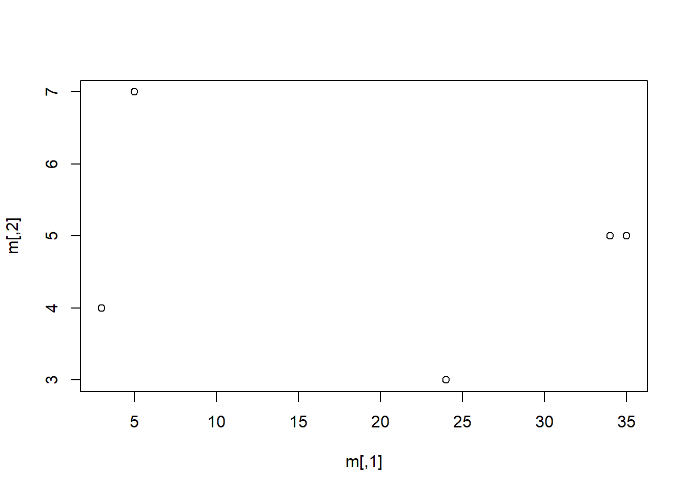
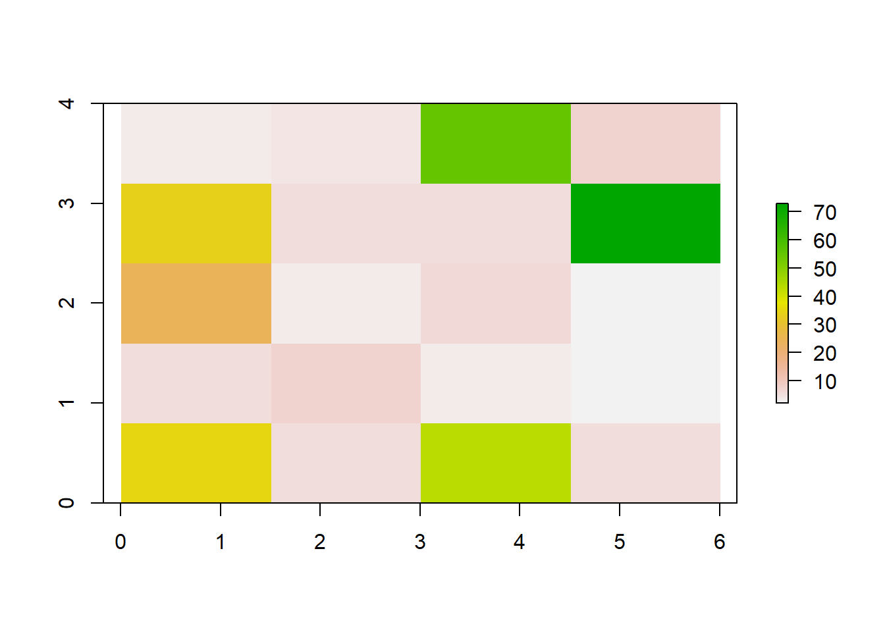
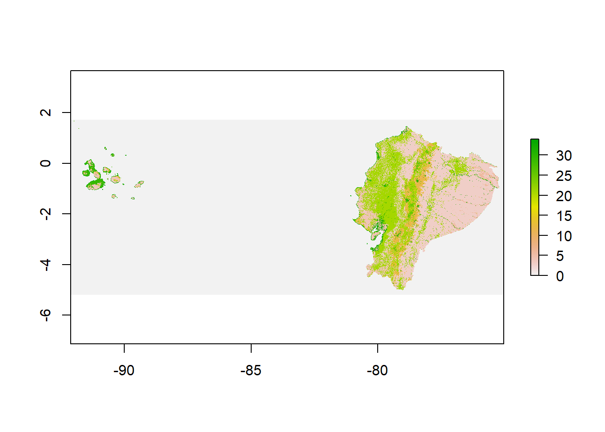
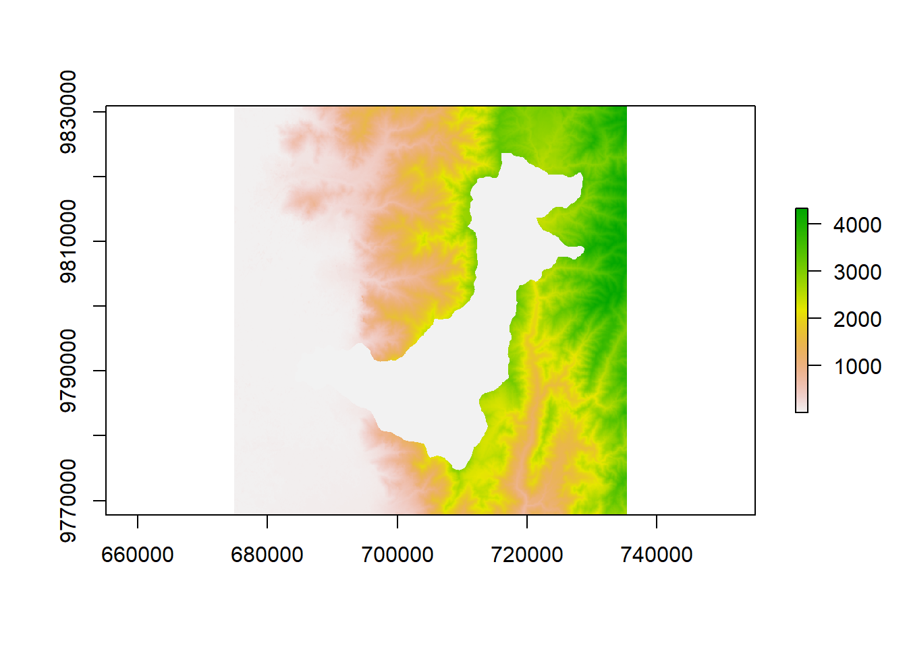
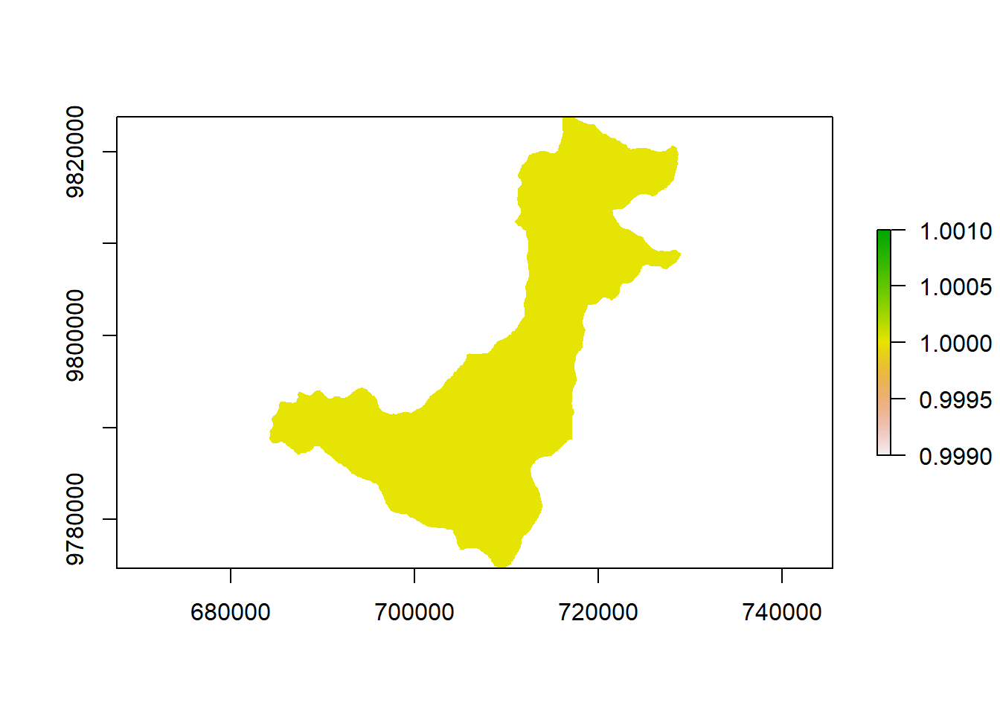
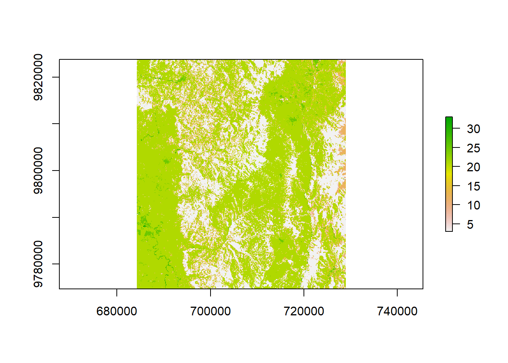
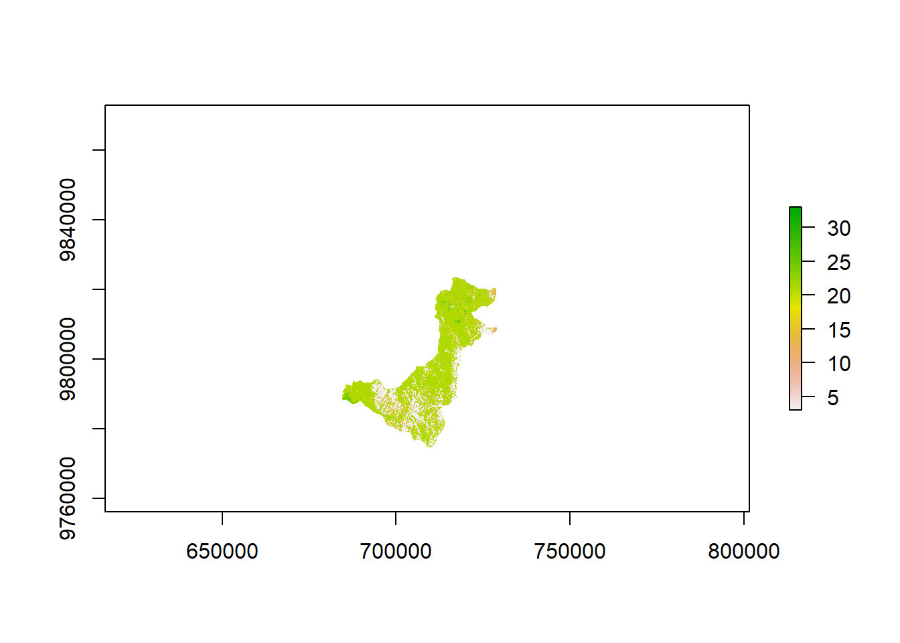

library(raster)8 Procesamiento de datos espaciales- Ráster
TipDatos de este capítulo
Los archivos que usa este capítulo están en datos/cap08.
Para ejecutar el código, descarga el proyecto completo (Libro_MDS.zip), descomprímelo y ábrelo en RStudio con DSM.Rproj. Las rutas del código funcionan tal cual.
8.1 Ráster
Un archivo ráster es un tipo de archivo que almacena datos de imagen en forma de una cuadrícula de píxeles o puntos de datos, en contraposición a los archivos vectoriales que almacenan datos de imagen en forma de líneas, formas y curvas.
Cada píxel en un archivo ráster contiene información sobre el color y la intensidad de la luz en una posición específica de la imagen.
Las imágenes de satélite, radar, LiDAR, fotografía aérea digital, mapas escaneados entre otros son ejemplos de fuentes de datos raster.
Los usos de estas fuentes son variados, por ejemplo, las imágenes de satélite frecuentemente son utilizadas para inventario y monitoreo de recursos naturales, para trabajos de ubicación, efectos y control de desastres como inundaciones, impactos de tsunamis, o terremotos.
El formato de archivo ráster más común dentro del análisis espacial es el TIFF.
Trabajar con datos ráster en R se puede hacer principalmente con el paquete raster. Este paquete proporciona herramientas para importar, manipular y analizar datos ráster, que son representaciones matriciales de datos geoespaciales, como imágenes satelitales, mapas de elevación, entre otros.
Creación y manipulación de datos ráster:
raster() Crea un objeto ráster a partir de una matriz de datos, especificando la extensión (coordenadas mínimas y máximas), las dimensiones (número de filas y columnas) y el sistema de referencia de coordenadas (CRS).
Nota: Recuerda cargar antes las librerías
NoteLibrería
NoteCrear matrix
# Crear la matriz
m = matrix(c(3,4,55,7,34,5,5,73,24,3,6,2,5,7,3,2,35,5,43,5 ),ncol=4,nrow=5,byrow=TRUE)
plot(m)
r <- raster(m)
extent(r) <- extent(c(0,6,0,4))
class(r)[1] "RasterLayer"
attr(,"package")
[1] "raster"print(r)class : RasterLayer
dimensions : 5, 4, 20 (nrow, ncol, ncell)
resolution : 1.5, 0.8 (x, y)
extent : 0, 6, 0, 4 (xmin, xmax, ymin, ymax)
crs : NA
source : memory
names : layer
values : 2, 73 (min, max)plot(r)
Guardar archivo
writeRaster(raster, filename, format, ...) escribe un objeto ráster en un archivo en varios formatos de datos ráster, como GeoTIFF ( ".tif"), Esri Grid ( ".grd") o ASCII Grid ( ".asc"). Los argumentos permiten la personalización del tipo de datos que se quiere guardar.
NoteGuardar
# Guardar el raster reclasificado
#writeRaster(raster_reclasificado, "ruta/donde/guardar/raster_reclasificado.tif", format = "GTiff")Importar datos ráster
Para importar un archivo ráster, como un GeoTIFF:
NoteImportar datos
raster = raster("datos/cap08/Coverage.tif")Verificación de los datos
Para verificar los detalles del ráster:
NoteVer datos
plot(raster)
Reproyectar
Cuando se realiza una reproyección, se busca modificar la proyección de un dataset ráster, dataset de mosaico o elemento ráster. También se pueden remuestrear los datos para obtener un nuevo tamaño de celda y definir un origen.
Para definir el CRS destino se debe utilizar el código del EPSG, por lo que el texto se escribe con el formato: +init=epsg:EPSG
NoteReproyectar
Se obtiene el crs del archivo
raster_zona= raster("datos/cap08/coverage_zone.tif")
crs (raster_zona)Coordinate Reference System:
Deprecated Proj.4 representation: +proj=longlat +datum=WGS84 +no_defs
WKT2 2019 representation:
GEOGCRS["unknown",
DATUM["World Geodetic System 1984",
ELLIPSOID["WGS 84",6378137,298.257223563,
LENGTHUNIT["metre",1]],
ID["EPSG",6326]],
PRIMEM["Greenwich",0,
ANGLEUNIT["degree",0.0174532925199433],
ID["EPSG",8901]],
CS[ellipsoidal,2],
AXIS["longitude",east,
ORDER[1],
ANGLEUNIT["degree",0.0174532925199433,
ID["EPSG",9122]]],
AXIS["latitude",north,
ORDER[2],
ANGLEUNIT["degree",0.0174532925199433,
ID["EPSG",9122]]]] Se utiliza la función projectRaster y se indica que el nuevo crs es el que le corresponde al ráster:
raster_proj = projectRaster(raster_zona, crs = "+proj=utm +zone=17 +south +datum=WGS84 +units=m +no_defs ")
raster_zona = raster_proj
crs(raster_zona)Coordinate Reference System:
Deprecated Proj.4 representation:
+proj=utm +zone=17 +south +datum=WGS84 +units=m +no_defs
WKT2 2019 representation:
PROJCRS["unknown",
BASEGEOGCRS["unknown",
DATUM["World Geodetic System 1984",
ELLIPSOID["WGS 84",6378137,298.257223563,
LENGTHUNIT["metre",1]],
ID["EPSG",6326]],
PRIMEM["Greenwich",0,
ANGLEUNIT["degree",0.0174532925199433],
ID["EPSG",8901]]],
CONVERSION["UTM zone 17S",
METHOD["Transverse Mercator",
ID["EPSG",9807]],
PARAMETER["Latitude of natural origin",0,
ANGLEUNIT["degree",0.0174532925199433],
ID["EPSG",8801]],
PARAMETER["Longitude of natural origin",-81,
ANGLEUNIT["degree",0.0174532925199433],
ID["EPSG",8802]],
PARAMETER["Scale factor at natural origin",0.9996,
SCALEUNIT["unity",1],
ID["EPSG",8805]],
PARAMETER["False easting",500000,
LENGTHUNIT["metre",1],
ID["EPSG",8806]],
PARAMETER["False northing",10000000,
LENGTHUNIT["metre",1],
ID["EPSG",8807]],
ID["EPSG",16117]],
CS[Cartesian,2],
AXIS["(E)",east,
ORDER[1],
LENGTHUNIT["metre",1,
ID["EPSG",9001]]],
AXIS["(N)",north,
ORDER[2],
LENGTHUNIT["metre",1,
ID["EPSG",9001]]]] Cambio de resolución o extensión
El cambio de la resolución y extensión del ráster (realizar un remuestreo), sirve para trabajar con capas de diferentes resoluciones. Y en la práctica es útil cuando se realizan operaciones con variables como pendiente, precipitación, indices de vegetación, elevación, entre otras.
NoteCambiar resolución
#| output: true
#| echo: true
res(raster_zona)[1] 30.0 29.8# Cambiar la resolución del raster
raster_nueva_resolucion = aggregate(raster_zona, fact = 10)
res(raster_nueva_resolucion)[1] 300 298# Cambiar la resolución del raster
raster_nuevo = disaggregate(raster_zona, fact = 10)
res(raster_nuevo)[1] 3.00 2.98Combinar ráster
La función merge() combina dos objetos ráster según una función especificada, normalmente combinando sus valores de celda según una operación lógica o matemática.
Los archivos deben tener la misma extensión para que se puedan combinar.
NoteCombinar
DEM= raster("datos/cap08/DEM_Cont.tif")
# Fusionar los raster
raster_fusionado = merge(rasterizado, DEM) #Recuerda que rasterizado es el shape que se convirtió en ráster
# Mostrar el resultado
plot(raster_fusionado)
Reclassificar
Reclasificar un raster es un proceso en el que se cambian los valores de las celdas (píxeles) en un raster original a nuevos valores, según ciertos criterios predefinidos. Este proceso es comúnmente utilizado en análisis espacial para simplificar o redefinir los datos raster, por ejemplo, para categorizar los valores en rangos específicos, convertir valores continuos en clases discretas o cambiar la resolución del raster.
En el ejemplo se reasignarán los valores así:
Valores de 0 a 12 metros: reclasificar como grupo 1.
Valores de 16 a 30 metros: reclasificar como grupo 2.
Valores superiores a 30 metros: reclasificar como grupo 3.
NoteReclasificar
# Definir las reglas de reclasificación
reglas = c(-Inf, 15, 1,
15, 30, 2,
30, Inf, 3)
# Reclasificar el raster
raster_reclasificado = reclassify(rasterizado, reglas)
plot(raster_reclasificado)
Procesamiento de datos ráster
Cortar capa ráster
Cortar a partir de un contorno
Cuando se tiene un ráster de gran extensión, se puede utilizar otra capa, que sirva como el polígono que recorte el ráster. Con la función crop(raster, extent)
NoteCortar
cropped_raster = crop(raster_zona,rasterizado)
plot(cropped_raster)
mask(raster, mask) esta función aplica una máscara a un objeto ráster, estableciendo los valores de las celdas fuera de la máscara en un valor específico (normalmente NA). La máscara puede ser otro ráster o una matriz lógica.
NoteCortar
# Cargar el raster de elevación (puedes usar cualquier raster)
poligono_interes = read_sf("datos/cap08/Watersheds.gpkg")
# Aplicar la función mask para extraer los valores de elevación dentro del polígono de interés
raster_recortado = mask(raster_zona, poligono_interes)
# Verificar el raster resultante
plot(raster_recortado)
# Guardar el raster recortado en un archivo
writeRaster(raster_recortado, filename = "salidas/recorte.tif", format = "GTiff", overwrite = TRUE)Propiedades de datos ráster
Se tienen diferentes tipos de funciones que proporcionan la información que contiene el ráster, lo que permite un mejor manejo, análisis y síntesis de los datos.
ncell(raster):Recupera el número total de celdas de un objeto ráster.
NoteCeldas
# Calcular el número de celdas en el raster
numero_de_celdas = ncell(raster_zona)
# Imprimir el número de celdas
print(numero_de_celdas)[1] 7924218extent(raster): Extrae la extensión (coordenadas mínima y máxima) de un objeto ráster.
NoteExtensión
# Obtener la extensión del raster
extension = extent(raster_zona)
# Mostrar la extensión
print(extension)class : Extent
xmin : 678609.4
xmax : 739269.4
ymin : 9756210
ymax : 9872996 values(raster): Accede a los valores de píxeles de un objeto ráster como una matriz numérica.
NoteValores
valores = values(raster_zona)
# Mostrar los valores
head(valores)[1] NA NA NA NA NA NA8.2 Ejercicios de recopilación
En la siguiente carpeta podrás descargar el archivo que se utilizarán para el ejercicio:
copia_este_link_en_el_navegador= "https://drive.google.com/drive/folders/1l7sgm2b0D9Hp8trHZvmVBs3eEYx1AjJl?usp=sharing"En el archivo “horizontes” se encuentran los puntos de muestreo tomados en campo y en “Watersheds” se encuentran las 3 cuencas visualizadas en el ejercicio.
Reproyecta los archivos al CRS en que trabajaremos: wgs 84 - 4326
De los 3 poligonos seleccione uno para realizar el mapeo.
Seleccione unicamente los puntos que pertenecen a su zona de estudio y guardelos.
Al área de mapeo seleccionada, realicele un buffer y guarde este ultimo poligono como: “Area_final.shp”